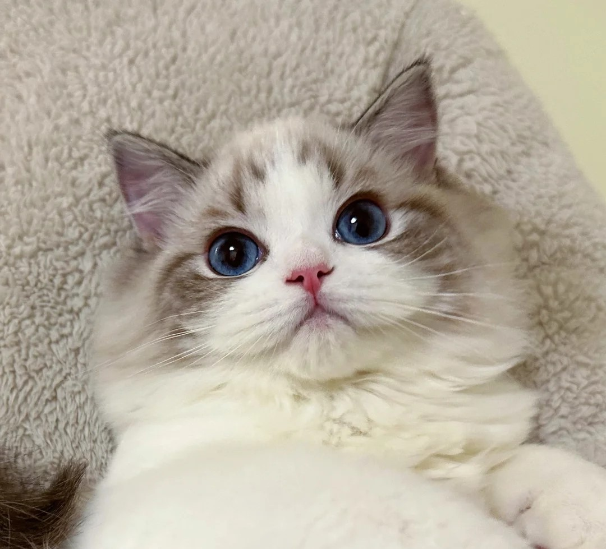
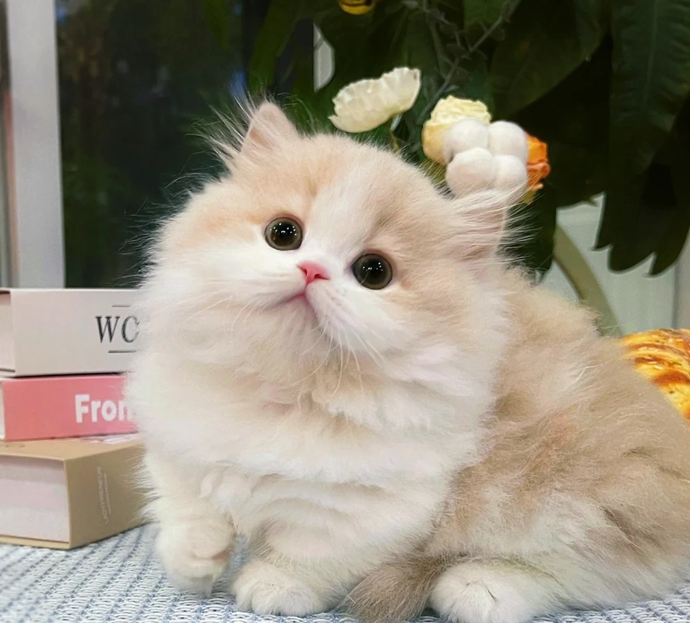

The ragdoll cat is a large, affectionate cat that goes with the flow.
Ragdolls are ideal lap cats because they simply go limp with pleasure
when they are being petted, giving them their name. This cat breed is
one of the largest, but don’t let the size intimidate you. Their big
blue eyes and loud, throaty purr let you know they're just big softies.
Ragdolls are notoriously social, making them a good fit for bustling
homes with plenty of people and friendly pets.
Read More

British Shorthair
The British shorthair is often thought of as a blue cat. It is one of
its most common colors that, at one point, the breed was called a
"British blue." This breed comes in a variety of colors. Their iconic
blue fur and copper eyes earn them a spot as a top blue cat breed. The
British shorthair's coat is short, dense, and thick. Its blue coat color
varies in shade but is typically light to 32medium blue and stays
uniform.Read More
Minuet
The Minuet cat breed is also known as the Napoleon. This new breed is
simply a cross between a Persian and a Munchkin cat, so it has the short
legs of a Munchkin and the beauty of a Persian. In addition to its small
size, this breed is known for its roundness, from its round face and its
large, round eyes, to its round body and strong muscles. Minuet cats are
wonderful family pets because they are very sweet and loving, and they
can get along well with children and other pets.Read More

American Shorthair
The American Shorthair is a medium-sized cat with a gentle nature that
makes this breed a great companion for families with children and/or
other pets. Descended from cats that were brought over on European
shipping vessels. These sweet kitties tend to be happy and playful pets,
but also have an independent streak which means they’re not quite as
needy as some other breeds. They are known for their easygoing, amiable
personalities. Their round faces give them a sweet look that correctly
conveys their temperaments. Read More